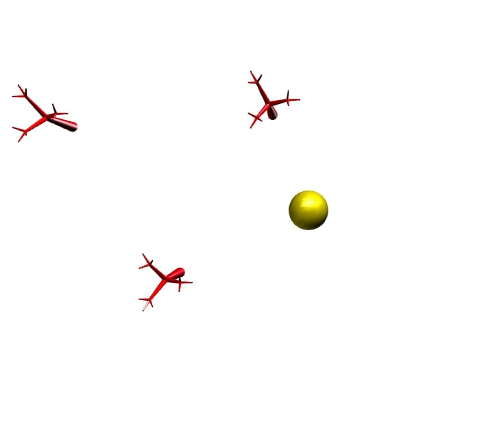
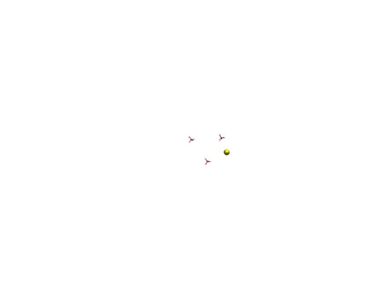
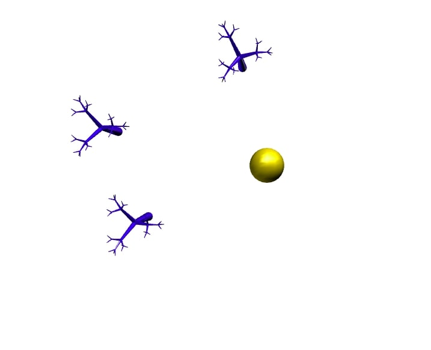
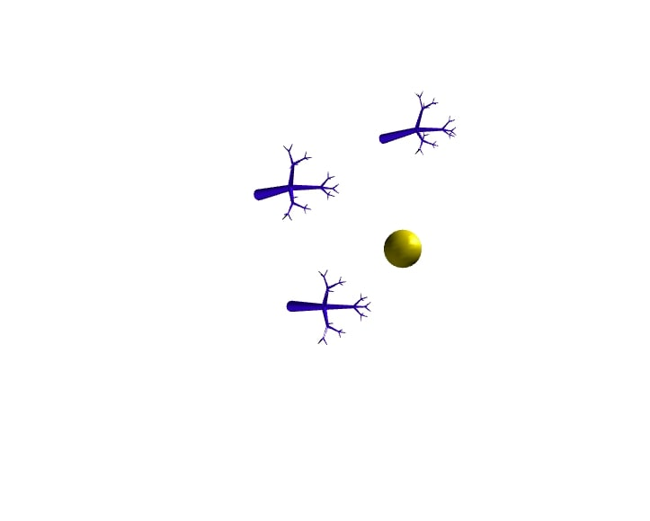

Celine Seghbossian
Login: cseghbos@ucsc.edu
CSE 160 -- Program 4
Tuesday, November 26, 2019
List of Files:
/prog4/
prog4.js
driver.html
features.html (this file)
output1.jpg
output2.jpg
output3.jpg
output4.jpg
output5.jpg
This program implements the functionality as specified by Program #4 specifications. It also has most of the functionality
of the previous assignments. There are assumptions as described below.
Objectives:
Add camera control.
Description:
Allow the user to change the viewpoint using GUI.
Details:
-
Zooming.
Allow the user to zoom in and out. This is achieved by modifying the field-of-view (fov)
parameter in your perspective call. Note that the camera position does not change.
To specify zooming, no objects must be selected.
Scrolling the wheel is then mapped to fov --
as the wheel is scrolled up, the fov is reduced thereby creating a zoom-in effect;
when the wheel is scrolled down, the fov is increased thereby creating a zoom-out effect.
-
Panning.
Again with no objects selected,
when the user left clicks on the background and moves the mouse,
it will move the camera horizontally and vertically on XY-plane of the image plane
of current view.
Note that the image plane is not always aligned with the world coordinate frame
e.g. after the view has been rotated (see below).
Panning the camera produces an effect somewhat opposite
to what you saw with object translation.
For example, when the camera is panned to the right, objects appear to move to the left.
-
Move the camera in or out.
This functionality allows the camera to be moved forward or backward along
its current view direction.
If the user clicks on the background with the
middle mouse and scrolls the wheel, it will move the camera in or out along the z-coordinate of
the viewing coordinate frame.
Unlike the zooming operation mentioned above, fov is unchanged,
but this will actually change the position of the camera.
Bugs:
- In create mode, clicking on existing tree will turn point light on and off.
- The point light sometimes does not move with the movement of the sphere.
For more information on implementation, please reference function descriptions in prog4.js
Link for grader:
driver.html
Moving Camera:
 
Zooming:

Panning:
 